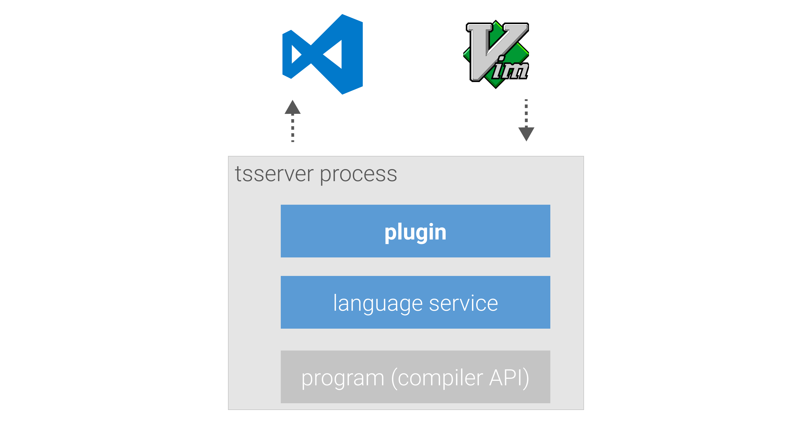

ESLint + TypeScript
Meguro.es #22
About me
- Yosuke Kurami (@Quramy)
- Web front-end developer
Which linter do you use with TypeScript ?
TSLint / ESLint
Announce on 8 Jan 2019

@typescript-eslint 🎉

I'm a TSLint user. How do I migrate ?

How to write .eslintrc ?
Google it 😇
How to write .eslintrc ?
How to configure IDE ?
Options to integrate ESLint to IDEs
- ALE (for Vim)
- Flycheck (for Emacs)
- vscode-eslint (for VSC)
- etc,,,
I've released typescript-eslint-language-service

How to setup
npm i typescript-eslint-language-service -D
// tsconfig.json
{
"compilerOptions": {
// ...other settings
"plugins": [
{
"name": "typescript-eslint-language-service"
}
]
}
}
Plugins...? 🤔
TypeScript's plugin system
Why plugin ?
A1. Editor agnostic
Plugin's functions are provided as tsserver features.
A2. Fast
- Using AST tokenized by TypeScript language server
- Only converting from TypeScript AST to estree
- See also my slide to get incremental parsing
- Caching ESLint configurations
- Purge cache when
.eslintrc.*files change
- Purge cache when
Using some internal APIs...

https://github.com/typescript-eslint/typescript-eslint/issues/774
BTW

/* tslint.json */
{
"defaultSeverity": "error",
"extends": [
"tslint-eslint-rules"
],
"rules": {
"no-duplicate-variable": true,
"no-eval": true,
"no-debugger": true,
"no-internal-module": true,
"no-unsafe-finally": true,
"object-curly-spacing": [true, "always"],
"no-trailing-whitespace": [true, "ignore-comments"],
"no-reference": true,
"no-console": [true, "log", "warn", "error"],
// more rules
},
"rulesDirectory": []
}
It's easy to migrate to ESLint because of using tslint-eslint-rules .